Nyzo version 527 (commit on GitHub) adds a basic web server to the client and verifier.
This version affects the client and the verifier. It does not affect the sentinel.
In an effort to promote decentralization and to provide a foundation for future improvements, this version adds a basic web server that can be activated in both the client and verifier.
In Verifier, if the appropriate preference is set, the web listener is started just before the main verifier loop.
If you want to activate the web listener for your verifier or client, add start_web_listener=1 to /var/lib/nyzo/production/preferences. Also, you will likely need to open port 80 to incoming traffic. If you are running a verifier or client locally and enable the web listener, you will be able to monitor the cycle through a web browser using the localhost or 127.0.0.1 address.
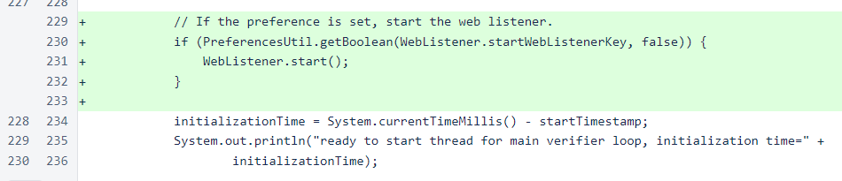In Client, if the appropriate preference is set, the web listener is started just before the command loop is started.
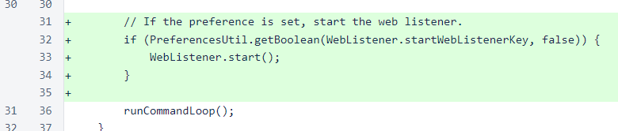In MicropayCreateCommand, a specific notice is shown if the provided argument appears to be a raw hexadecimal string. Also, an issue with the argument validation message has been corrected. The hexadecimal warning has also been added in other locations where a user might use a raw hexadecimal string when a Nyzo string is required.

The warning, presented for both private keys and public IDs, informs the user of the Nyzo string input requirement and references the appropriate command for generating a Nyzo string.
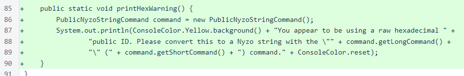This is an example of how the warnings appear before the validation table in the send command.
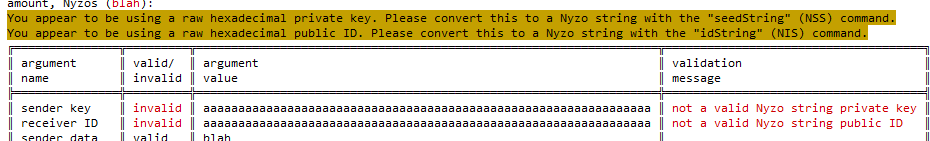The CycleController class builds the one page that is currently served by the Nyzo client and verifier. The page is very simple: it shows the frozen edge and the cycle. It performs an Ajax update every 5 seconds to refresh the content.

The EndpointMethod interface declares the method that is used for endpoints. In the next version, this interface will likely be modified to allow specification of a content type.
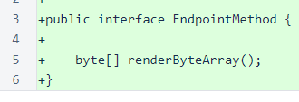The WebListener class services HTTP requests. Note the com.sun.net imports. If anyone is using a Java runtime that does not include these imports, let us know, and we will look into alternative options for providing basic HTTP server functionality.
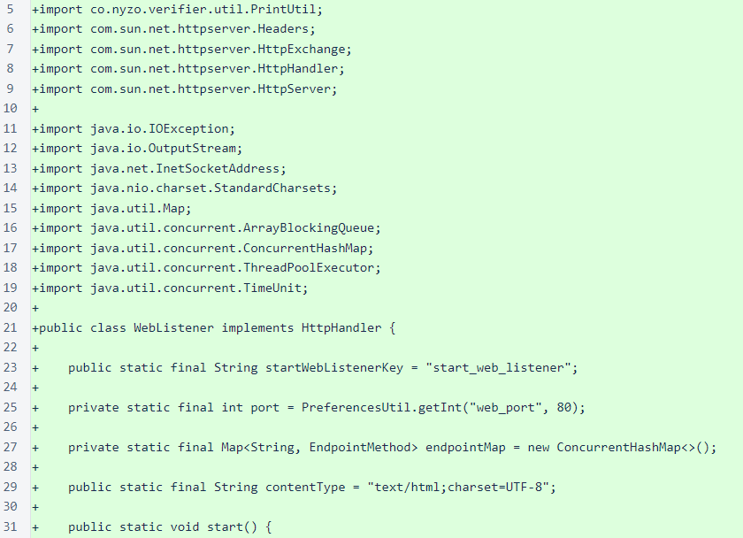The buildEndpointMap() method builds the map that is used to direct endpoints to methods. The method references (::) used in this method were introduced in Java 8. In this case, endpointMap contains references to objects implementing the EndpointMethod interface. Because this interface only declares a single method that takes no arguments and returns byte[], then a method reference to a method that takes no arguments and returns byte[] is treated as a class implementing that interface. We generally avoid such succinct, clever code features (note the absence of Lambda expressions in the Nyzo codebase), as we find the verbose typing of Java generally improves readability of code. However, in this instance, the succinctness of method references allows for such a clean, easy-to-read assembly of an endpoint map that we feel use of the feature is justified.
The add() method is used to shorten each line of map-building code by a few more characters to make the code more compact and reduce the number of line breaks with longer endpoint and method names.
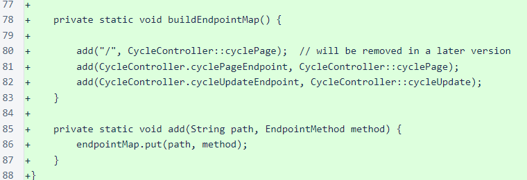The WebUtil class contains methods for sanitizing strings for inclusion in web pages. It also contains a simple method for generating identifiers for page elements.
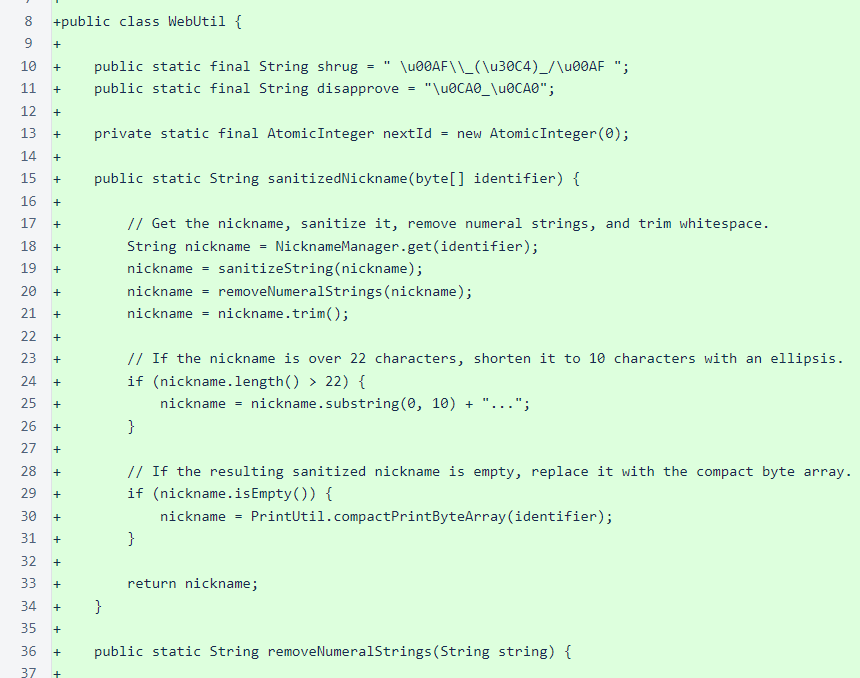A number of small classes have been added for structuring HTML elements. Most elements extend the abstract HtmlTag class, and the only method they need to implement is the abstract getName() method.
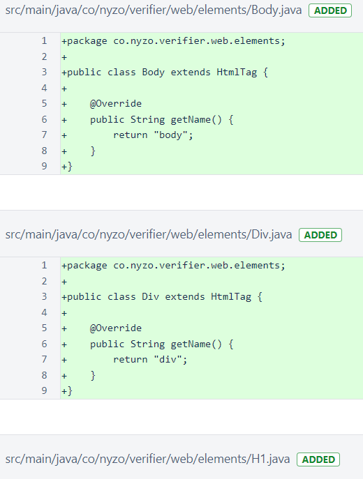The HtmlElement interface is the basic interface that all elements must implement to be included in the structure of a document. It declares a single method for rendering the element to a String.
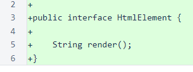The abstract HtmlTag class provides the core functionality of HTML document construction. The elements list provides the necessary structure for the document tree, and the attributes map provides storage of arbitrary attributes.
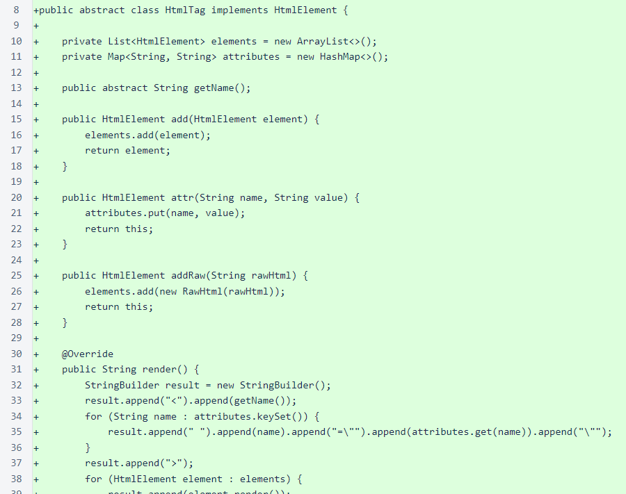The ajaxUpdate method generates a simple script for updating an element from a specified endpoint.
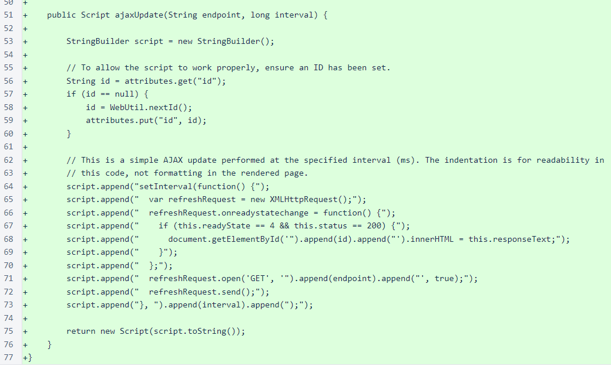